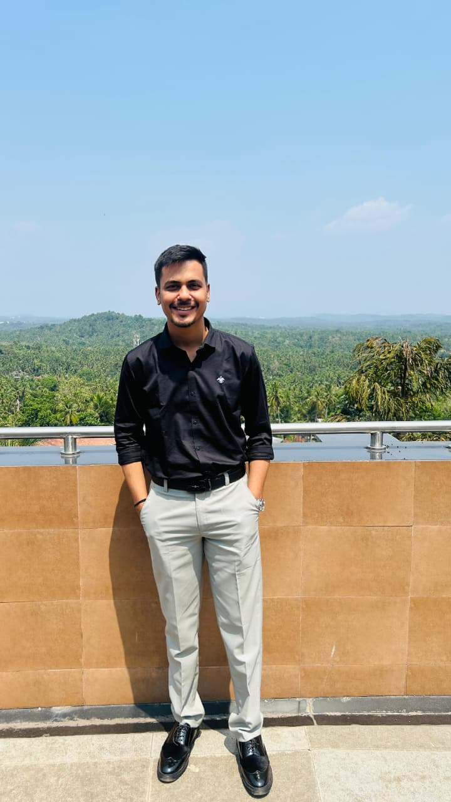

CA Final AIR 49
Investment Banking Analyst | Career Mentor

Hello everyone, I'm Aman Badala. Integrity, honesty, and valor are the values that define me. From serving as Prime Minister of the School Student Council to being a Managing Committee member at WICASA Surat, my journey helped me develop strong leadership, communication, and public speaking skills.
Driven by hard work and resilience, I achieved an All India Rank 49 in CA Finals.
Cleared all levels of CA in the first attempt and secured AIR 49 in CA Final. Also secured 97% in Class XII and achieved India Rank 2 in ISC Board.
Worked as an Investment Banking Analyst at Finportal Investments Private Ltd. Experienced in startup consultancy, mergers & acquisitions, and investor relations.
As Operations Head at WICASA Surat, contributed to conferences and workshops impacting more than 5000 CA students.
I work in the finance domain with experience across investment banking, startup advisory, M&A and business consulting. I continue to focus on learning, leadership, and helping students grow.
I can help students with:
👉 My goal is to inspire students to embrace confidence, follow their passions, and create a meaningful story for their lives.